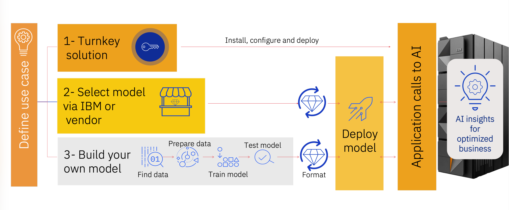

Use Cases & AI Entry Points
Bring AI to where your mission-critical data lives — on IBM LinuxONE — with proven entry points, performance benchmarks, and solution patterns for enterprise AI.
Overview
Organizations adopt AI on IBM LinuxONE differently based on their business goals, existing skills, and time-to-value requirements. Some deploy a pre-built turnkey solution, others lift and shift an existing model to take advantage of LinuxONE's hardware acceleration, and others build their own models end-to-end. Understanding these entry points helps you identify the right products, skills, and lifecycle stages for your AI journey.
IBM LinuxONE delivers AI at enterprise scale — capable of processing up to 450 billion inference requests per day with 99% completed within 1ms response time using a credit card fraud detection composite AI setup. In a recent Celent study, this combination could reduce fraud risks of medium-sized banks by more than $35M per year.
Why Deploy AI on IBM LinuxONE?
Real-Time Business Growth
Deliver 100% predictive AI scoring in real-time. Run an OLTP workload with AI-infused Credit Card Fraud Detection on Red Hat OCP with 10.3× more throughput vs. x86.
Efficiency & Quantization
The IBM LinuxONE 5 Telum II processor supports INT8 quantization — up to 2× more efficient than FP16 in speed and memory usage — designed to reduce inference latency.
Energy Optimization
Achieve 83% energy reduction for multiple-model AI on platform vs. remote on x86 server with GPU — keeping AI inference sustainable and cost-effective.
AI Acceleration Hardware
IBM Spyre Accelerator cards provide 32 Gen AI-ready cores per adapter card, with up to 48 adapter cards per system — purpose-built for generative AI and LLM workloads.
The Three AI Entry Points
AI client engagements on IBM LinuxONE start from one of three entry points depending on your existing assets, skills, and goals. All three paths lead to AI insights infused into your business applications.

Turnkey Solution
Pre-integrated & packaged solutions for specific business use cases.
IBM and its ecosystem partners offer pre-built AI solutions ready to deploy with minimal setup. These solutions embed AI directly into the platform or provide vendor-managed models purpose-built for specific domains — such as anti-money laundering and fraud detection.
When to choose this entry point
- No data science skills in-house
- Intend to shorten time to value
- A proven, pre-built solution already exists for your use case
- Prefer a managed or embedded AI experience
IBM Turnkey Examples
- watsonx Assistant for LinuxONE — conversational AI and agentic automation for LinuxONE operations, with no-code and pro-code agent builder options
Select a Model via IBM or Vendor
Lift and shift an existing model to IBM LinuxONE inferencing acceleration.
Choose a foundation model, open-source model, or vendor-supplied model and deploy it on IBM LinuxONE using IBM's inferencing infrastructure and hardware acceleration. No model training required — focus is on model formatting, serving, and integration.
When to choose this entry point
- No data science skills in-house but want to leverage existing models
- Want to take advantage of inferencing acceleration on IBM LinuxONE
- Deploying a foundation model or LLM for generative AI workloads
- Moving models from another platform to LinuxONE
Key Serving Tools
- IBM Z Accelerated for Nvidia Triton Inference Server
- IBM Z Accelerated Serving for TensorFlow
- Red Hat OpenShift AI / Red Hat AI Inference Server
- watsonx.ai, AI Optimizer for LinuxONE
Build Your Own Model
Full AI lifecycle — from your enterprise data to your deployed model.
When no existing model meets your needs, build one. This entry point covers the full lifecycle: find and prepare data, train a model on your enterprise data, convert and optimize it, and serve it in production on IBM LinuxONE using hardware-accelerated inferencing.
When to choose this entry point
- Data science skills are available in-house
- Need higher control over model creation and training
- Existing models do not provide sufficient accuracy or coverage
- Want to leverage tool investment across multiple use cases
Key Training Tools
- IBM Z Accelerated for TensorFlow, PyTorch, Snap ML
- IBM Synthetic Data Sets (Payment Cards, Core Banking, Insurance)
- watsonx.ai, Cloud Pak for Data on LinuxONE
- ONNX & IBM Z Deep Learning Compiler (zDLC)
Which Entry Point Is Right for You?
| If you want to… | Entry Point |
|---|---|
| Adopt AI quickly with no model training or data science team | 1 — Turnkey Solution |
| Deploy a proven IBM, open-source, or vendor model on LinuxONE hardware acceleration | 2 — Select a Model |
| Train a model on your own data and own the full AI lifecycle | 3 — Build Your Own |
| Ask conversational questions and automate LinuxONE system tasks with AI agents | 1 — watsonx Assistant for LinuxONE |
| Run real-time fraud detection at massive scale (>450B inferences/day) | 2 or 3 — with Telum II / Spyre acceleration |
Once you've identified your entry point, explore the AI Lifecycle for implementation guidance, and Products & Tools for a full catalog of available technologies on IBM LinuxONE.